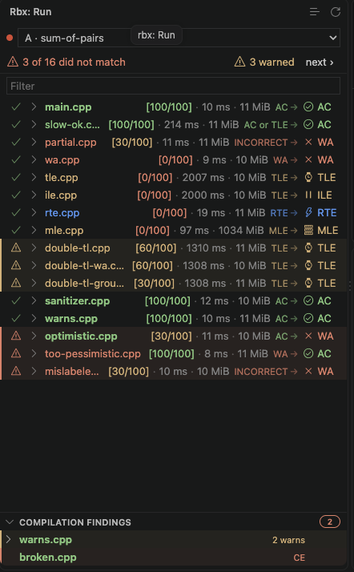
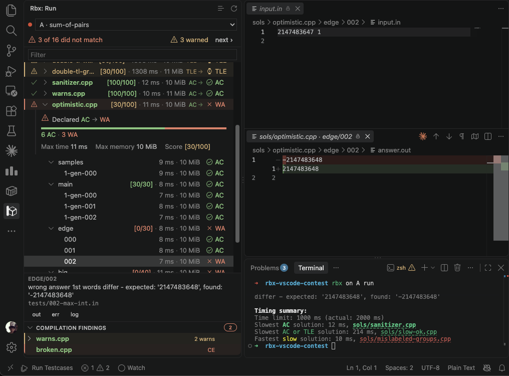
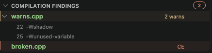
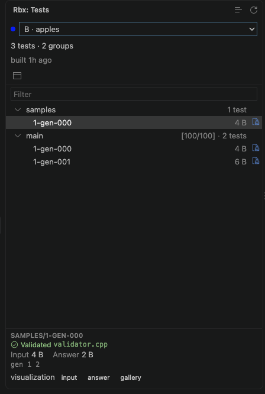
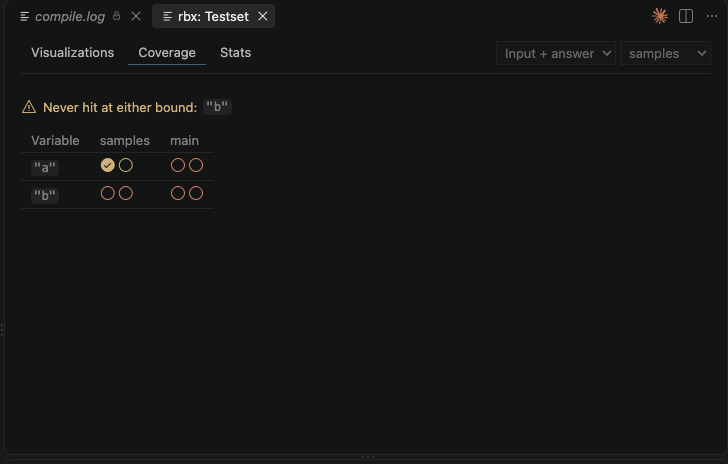
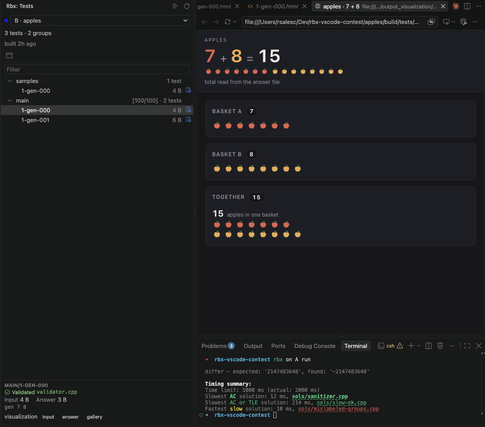

rbx for VS Code#
rbx ui is one way to inspect a run and the testset it ran against. The rbx
extension is another, for when the editor is where you already are: it reads
the same files from the same package, and shows them in the sidebar next to the
solution you are editing.
Which one you want is mostly a matter of where you work. The TUI runs anywhere
a terminal does, and does not care which editor you use; the extension gives
you VS Code's own diff, its editors and its Problems panel, and it does not
take over the terminal you are typing rbx into.
It never builds or runs for you
Execution stays in the terminal. You type rbx run; the extension watches
the package and renders whatever lands there. It does call rbx itself
for a couple of small things -- drawing a visualization, asking what a
variable expands to -- and for those it has to find an rbx to call, which
Finding rbx covers.
Installing#
From the editor's integrated terminal:
That sideloads the .vsix bundled with your rbx, so the extension always
matches the CLI that produced the runs it reads. Reload the window
afterwards -- a freshly installed extension does not activate in windows that
are already open.
Cursor, Windsurf and VSCodium work the same way: they all report themselves as
VS Code, and rbx tells them apart by which app the terminal belongs to. Pass
--editor if it guesses wrong, which is also how you install from a terminal
outside the editor.
Over SSH or in a devcontainer this installs into the remote extension host, which is the right place -- that is where your package lives.
The extension is not published on any marketplace. When your rbx ships a
newer extension than the one you have installed, rbx run says so once and
points you back at this command.
The run view#
The rbx icon in the activity bar opens the run view: solution, group,
testcase, filled in live as rbx run works through them.

Three different things can be true of a solution at once, and the view keeps them in three separate places so they cannot be mistaken for one another:
| Channel | Says |
|---|---|
| the name, coloured | what problem.rbx.yml declared -- exactly as rbx run colours the same name |
| the chip on the right | what the run actually produced, one icon per verdict |
| the gutter on the left | whether those two agree: a tick when the declaration was met, a red triangle when it was missed, a yellow one when rbx warned about a run that still passed |
So sols/wa.cpp answering wrongly is a calm row, and the main solution breaking
is not -- a miss is the only thing in the view with a background colour.
Every solution and every group carries its own summary: the verdict underneath
it, the points it earned, and the max time and memory across its testcases.
A solution still running shows how far it has got (12/40) instead of a
verdict.
In a contest, a dropdown in the header picks which problem you are looking at,
naming problems by their contest letter and colour. It follows the problem that
is running, so rbx contest each run walks the view along with it. The
dropdown is hidden entirely when the workspace holds a single package.
A contest split into variants gets one block per variant, headed by the variant
id. The extension never learns which variant you passed to -C, so it offers
all of them at once: the canonical contest's problems first, then each variant's
under its own heading. Two divisions that both start at A stay apart, and the
heading says which A you are about to open.
Opening a testcase#
Enter on a testcase -- or a click on it -- opens two editor panes: the input, and the output diffed against the expected answer.

Under the tree, a card describes the selected testcase and carries the two facts its row cannot fit:
- the checker's own message, wrapped and whole -- the answer to why a solution answered wrongly;
- where the test came from -- the generator call, the generator script, or the testcase it was copied from, with the ones that point at a real file opening it.
The card's out, err and log buttons pick what the second pane shows: the
output against the expected answer, what the solution wrote to stderr, or the
run log for that testcase. The choice is sticky, so arrowing down a group keeps
reading the same channel.
The panes are laid out once, the first time a testcase is opened, and then left alone; afterwards the extension finds its own panes and reuses whichever groups they are sitting in. Drag them where you want them and they stay there.
Compilation findings#
A solution that did not compile never ran, and rbx leaves it out of the run entirely. Under the tree, a Compilation Findings panel keeps one row per solution the compile phase had something to say about, badged red the moment one failed to compile and yellow while everything merely warned.

A row with warnings expands into one line per warning -- its line and its flag,
22 · -Wshadow -- and clicking one goes to that line in the source. A row that
failed to compile opens the compiler output verbatim.
Browsing the testset#
The Tests view lists what rbx build produced: the groups, their testcases,
and where each one came from. Selecting a testcase opens its input and expected
answer, and its card names the validator that accepted it and the generator that
wrote it.

A panel opens beside it, following whatever the sidebar has selected, with:
- a visualization gallery, when your package declares a visualizer;
- constraint coverage -- which of your validator's bounds the testset actually hit, and which no test ever touched;
- testset stats -- sizes and counts, group by group.

Visualizations#
If your package declares a visualizer, the
pictures rbx build --visualize produced are opened from here, the way
v opens them in rbx ui. Select a testcase and its card offers one
visualization button per picture that exists: input for the testcase
itself, answer for the one drawn
from the expected
answer, and
gallery for the whole group at once, in the panel.

An image opens in an editor tab; an interactive HTML one opens in VS Code's own browser, beside the list you picked it from, rather than in whatever program your desktop associates with the file.
Solution outputs are not visualized here
These are the pictures rbx draws from a testcase and its expected
answer. Visualizing what a solution printed is not available in the
extension yet -- use rbx ui for that.
Variables in a statement#
While you are editing a statement, every \VAR{...} that names one of the
package's variables is followed by what that
variable expands to, so a constraints block reads as its numbers without
problem.rbx.yml open beside it.
The greyed numbers on the right are not in the file: they are VS Code's own
inlay hints, which means editor.inlayHints.enabled turns them off along
with every other extension's, and rbx.statementVarHints turns off just these.
The values come from rbx vars, which only reads problem.rbx.yml -- so they
are right while you type, and do not wait for a rbx build or a
rbx statements build.
A reference piped through a
filter is hinted as what the filter
makes of it, not as the bare number underneath. rbx renders the expression
itself, so the hint agrees with the statement whatever you pipe through --
sci, rsci, or any Jinja2 builtin such as upper or round(2):
\item $1 \le N \le \VAR{N.max | sci}$ 10⁵
\item $1 \le a_i \le \VAR{A.max | sci}$ 10⁹
\item Answers modulo \VAR{MOD | rsci} 10⁹ + 7
An inlay hint cannot typeset maths, so it spells the same value in plain text:
superscript digits and × where the built statement gets ^{} and \times.
Only the spelling changes. What a filter decides is the same in both places,
so sci leaving 250000 as its digits in the PDF leaves it as its digits in
the hint too.
A reference to a test group's own variables is hinted too, as long as it names the group:
The value is that group's resolved set -- the package variables with the
group's overrides applied -- so a name the group does not override is hinted
with the value it inherits, exactly as it renders. The shorthand
\VAR{problem.groups.sub1.N.max} is hinted the same way, and a group whose name
holds a dash is reached the only way Jinja2 can reach it, as
\VAR{problem.groups['sub-1'].N.max}.
A hint is shown only where it can be exactly right, and there are three places it deliberately is not:
- Only a group you name. A reference like
\VAR{g.N.max}inside a\BLOCK{for g in groups}loop renders a different number per group, so one hint on one line would have to lie or to pick a group; it gets nothing. This is worth knowing because the loop is how a subtasks table is usually written -- the table stays unhinted, while a constraint that names its group does not.\VAR{p.N.max},\VAR{problem.title}and\VAR{contest.year}resolve against variable sets that are not this problem's own, and get nothing either. - Nothing is ever guessed. A name no variable answers to, an expression
that is not a plain dotted name, a commented-out line, an escaped
\\VAR-- all get nothing, and neither does a half-typed pipeline like\VAR{N.max |}. A filter over a name that does not exist gets nothing either: the name is looked up before anything is rendered, so a typo never costs a render. An absent hint is never a wrong one, and it is a useful tell: a misspelled variable is the one reference on the line with no number next to it. - Only what the manifest calls a statement.
problem.rbx.yml'sstatementsandtutorialsare hinted. A contest statement declared incontest.rbx.yml, and the LaTeX template a statement is rendered into, are not -- they are not problem statements, and their variables are not this package's.
Finding rbx#
Drawing a visualization and reading a statement's variables both call rbx,
so the extension has to find one. It tries PATH first and then asks a login
shell, because the extension host inherits the PATH of whatever launched VS
Code -- open the editor from Finder or the Dock rather than from a terminal and
that PATH is a bare one, without the ~/.local/bin that uv tool install
and pipx write into.
If neither finds it, point rbx.executable at the binary. The setting is
per-folder, so a workspace holding packages on different rbx versions can
give each one its own.
Everything else keeps working without an rbx to call: the views read files.
Settings#
Every surface above can be turned off or adjusted on its own. Search for
@ext:rsalesc.rbx-vscode in VS Code's settings to see all of them, these included.
| Setting | Default | Does |
|---|---|---|
rbx.compilationDiagnostics |
true |
Report compiler warnings and failures in the Problems panel |
rbx.statementVarHints |
true |
Show what each \VAR{...} in a statement expands to, beside the reference |
rbx.executable |
(empty) | The rbx to call, when finding it automatically does not work |
rbx.solutionLabel |
trimmed |
How much of a solution's path the run view shows: full, trimmed or basename |
rbx.testcaseLayout |
below |
Where the second testcase pane is first placed: below or beside |